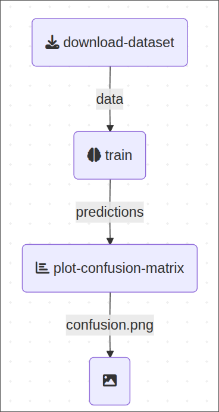
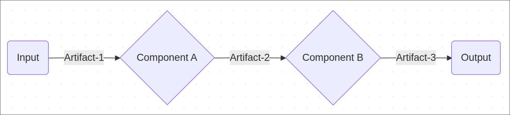

from kfp import dsl
base_image = "python:3.12"
@dsl.component(
base_image=base_image,
packages_to_install=["scikit-learn>=1.7.1"] # <--- Specify dependencies
)
def download_dataset(dataset: dsl.Output[dsl.Dataset]):
...
@dsl.component(
base_image=base_image,
packages_to_install=["scikit-learn>=1.7.1"]
)
def train(
dataset: dsl.Input[dsl.Dataset],
predictions: dsl.Output[dsl.Artifact]
):
...
@dsl.component(
base_image=base_image,
packages_to_install=[
"matplotlib>=3.10.5",
"scikit-learn>=1.7.1",
"seaborn>=0.13.2",
)
def plot_confusion_matrix(predictions: dsl.Input[dsl.Artifact]):
...
@dsl.pipeline
def pipeline():
dataset_task = download_dataset()
train_task = train(dataset=dataset_task.outputs["dataset"])
plot_task = plot_confusion_matrix(predictions=train_task.outputs["predictions"])Dependency Management with uv in Kubeflow Pipelines
Python
uv
MLOps
Kubeflow
Pipelines
A simple workflow to manage dependencies of Python Kubeflow components
TL;DR
When defining a Python-based Kubeflow Pipeline component, you typically list dependencies using the packages_to_install argument in kfp.dsl.component or by baking them into a custom Docker image.
I present here a custom_component wrapper that leverages uv to automate this process by inferring dependencies from dependency-group in the pyproject.toml file.
See code repo here
Introduction
Kubeflow is an open-source project including a number of sub-projects like Kubeflow Pipelines that I will talk about here.
Kubeflow is a platform for building and deploying portable and scalable machine learning (ML) workflows using containers on Kubernetes-based systems. A pipeline is a definition of a workflow that composes one or more components together to form a computational directed acyclic graph (DAG).
In other words, Kubeflow is an orchestration tool for data/machine learning workflows.
This is the example pipeline we’ll be working on:

Simple enough, a pipeline with 3 components:
download-dataset:Fetch and prepare datatrain: Train a machine learning modelplot-confusion-matrix: Plot model performance
Kubeflow offers several alternatives to define pipeline components and the easiest way is to use a so-called “Python-based” component that look like this:
That is the skeleton of the pipeline. If you are interested in the actual implementation of the components you can expand the code section below or check out this repo (but for now is not really necessary to understand the problem).
Code
@dsl.component
def download_dataset(dataset: dsl.Output[dsl.Dataset]):
import pickle
from sklearn.datasets import fetch_20newsgroups
from sklearn.feature_extraction.text import TfidfVectorizer
def fetch_data(subset: str):
categories = ["alt.atheism", "talk.religion.misc", "comp.graphics", "sci.space"]
return fetch_20newsgroups(
subset=subset,
categories=categories,
shuffle=True,
random_state=42,
)
data_train, data_test = fetch_data("train"), fetch_data("test")
y_train, y_test = data_train.target, data_test.target
vectorizer = TfidfVectorizer(
sublinear_tf=True, max_df=0.5, min_df=5, stop_words="english"
)
X_train = vectorizer.fit_transform(data_train.data)
X_test = vectorizer.transform(data_test.data)
out = {
"X_train": X_train,
"y_train": y_train,
"X_test": X_test,
"y_test": y_test,
"target_names": data_train.target_names,
}
with open(dataset.path, mode="wb") as file:
pickle.dump(out, file)
@component
def train(
dataset: dsl.Input[dsl.Dataset],
predictions: dsl.Output[dsl.Artifact],
):
import pickle
from sklearn.linear_model import RidgeClassifier
with open(dataset.path, mode="rb") as file:
data = pickle.load(file)
clf = RidgeClassifier(tol=1e-2, solver="sparse_cg")
clf.fit(data["X_train"], data["y_train"])
pred = clf.predict(data["X_test"])
out = {
"y_test": data["y_test"],
"y_pred": pred,
"target_names": data["target_names"],
}
with open(predictions.path, mode="wb") as file:
pickle.dump(out, file)
@dsl.component
def plot_confusion_matrix(
predictions: dsl.Input[dsl.Artifact],
confusion_plot: dsl.OutputPath(str),
):
import pickle
import matplotlib.pyplot as plt
from sklearn.metrics import ConfusionMatrixDisplay
import seaborn as sns
sns.set_theme(style="white", font_scale=1.2)
with open(predictions.path, mode="rb") as file:
preds = pickle.load(file)
fig, ax = plt.subplots(figsize=(10, 5))
ConfusionMatrixDisplay.from_predictions(preds["y_test"], preds["y_pred"], ax=ax)
ax.xaxis.set_ticklabels(preds["target_names"])
ax.yaxis.set_ticklabels(preds["target_names"])
ax.set_title("Confusion Matrix")
fig.savefig(confusion_plot)
plt.close()Executing the pipeline
So far we have our pipeline expressed as a DAG (directed acyclic graph) with all the relationships between components.
Think of each component as a box that can take inputs, does computation and can produce output, where inputs/outputs mean any kind of artifact (data, machine learning model, etc.).

Here’s the point where the “magic” from the kpf library comes in: kpf will prepare docker images specifications and each component will run in a separate, isolated docker container on whatever execution engine we choose (local laptop, cloud machine, etc.) and we can pass data between components by defining inputs/outputs. You can think of it as the body of the function being a script that runs inside the container.
One last thing, kubeflow will “compile” the pipeline definition into a serializable format (e.g., json, yaml), so that we can use that recipe to let the compute engine run our job or to log and/or reproduce the experiments. Here’s what that looks like:
from kfp import compiler
compiler.Compiler().compile(pipeline, package_path='pipeline.yaml')Component dependencies
Each container image is built from a base image (for example, python:3.12) on top of which we install the particular dependencies, such as scikit-learn, pandas, etc., necessary to compute the step. And each component has specific python dependencies that in kubeflow get passed as the list of strings packages_to_install (see example above).
Here’s where things get tricky.
Managing the dependencies of all the pipeline components is challenging because even if we pin the dependencies of the necessary libraries (e.g., “pandas==2.3.1”), transitive dependencies (libraries that those libraries depend on) can break things in unpredictable ways (ever heard of the numpy 2.0 release? 🙃).
Beyond that, adjusting the dependencies of each component by hand definitely does not scale and we want to be able to profit from tooling such as dependabot, which does not understand the list “packages_to_install”, for security fixes that allow us to adjust the whole dependency graph as needed (let machines do machine-work!). That is, we need a proper lockfile.
So here’s my solution to this problem such that we are still able to write light-weight python-based components while taking care of dependencies as you would like in the typical software development flow.
One more thing: Apart from the python dependencies, we also want to ideally have the python version itself to be consistent across components – we’ll take care of that as well.
Kubeflow meets UV
I will use uv here but originally implemented this using poetry and that also works.
As we saw above the decorator dsl.component takes apart our python function and generates the specification for building a docker image.
We will basically write a new decorator to replace that wrapper with a fixed parameter (the python version) and with a dynamically adjusting parameter (the packages to install).
Let’s write a function that based on the pyproject.toml (and uv.lock) file exports the dependencies as a list of strings:
Code
import tempfile
import functools
import subprocess
from pathlib import Path
from kfp import dsl
def run(cmd: list[str]):
try:
subprocess.check_output(cmd, text=True)
except subprocess.CalledProcessError as e:
print(e.output)
raise edef get_packages_to_install(group: str):
"""group: name of the dependency group, i.e, the component name"""
with tempfile.NamedTemporaryFile() as file:
run(
[
"uv",
"export",
"--group",
group,
"--no-hashes",
"--no-annotate",
"--no-header",
"--format",
"requirements.txt",
"-o",
file.name,
]
)
packages = Path(file.name).read_text("utf-8").splitlines()
return packagesIn a nutshell, the function calls the external program uv in a subprocess to export the dependencies (the whole graph!) into a list of strings that we can pass as packages_to_install.
Now we’re ready to write our component decorator:
@functools.wraps(dsl.component)
def custom_component(func, **kwargs):
"""
A wrapper around kfp.dsl component that infers the dependencies
based on the name the pipeline component.
IMPORTANT: The dependencies group must have the exact same name
as the component for it to work!
"""
return dsl.component(
func,
base_image="python:3.12-slim",
packages_to_install=get_packages_to_install(
func.__name__, pyproject=pyproject),
**kwargs,
)Notice thatt we only touch the parameters base_image and packages_to_install while passing through the rest of the kwargs, which allows us to preserve functionality of the original decorator.
After that we can use the custom_component decorator to define our pipeline components in a rather ergonomic fashion:
@custom_component
def download_dataset(dataset: dsl.Output[dsl.Dataset]): ...
@custom_component
def train(dataset: dsl.Input[dsl.Dataset], predictions: dsl.Output[dsl.Artifact]): ...
@custom_component
def plot_confusion_matrix(predictions: dsl.Input[dsl.Artifact]): ...
@dsl.pipeline
def pipeline():
dataset_task = download_dataset()
train_task = train(dataset=dataset_task.outputs["dataset"])
plot_task = plot_confusion_matrix(predictions=train_task.outputs["predictions"])How neat is that?! 🚀
Adding a new component
To add a new pipeline component we just need to add the dependency group block to the pyproject.toml (or simply run uv add --group <component-name> <dependencies> which will do that for us).
The file could like this:
[project]
name = "pipeline"
version = "0.1.0"
description = "An ML pipeline"
readme = "README.md"
requires-python = ">=3.13"
dependencies = [
"kfp >= 2.13.0",
]
[dependency-groups]
download_dataset = [
"scikit-learn>=1.7.1",
]
train = [
"scikit-learn>=1.7.1",
"numpy<2.0",
]
plot_confusion_matrix = [
"matplotlib>=3.10.5",
"scikit-learn>=1.7.1",
"seaborn>=0.13.2",
]The good thing is that uv will automatically generate the lockfile ensuring reproducibility.
Wrapping up
I showed you a workflow that
- Use standard pyproject.toml format
- Keep consistent python version and dependencies across components
- Manage dependencies of all components at once, including lockfile
- Improve maintainability (eg. automatic security fixes) of the pipeline
- Facilitate integration of new components
- Preserve functionality of the native
kfp.dsl.component
You can find all the code in this repo with a fully working example of a pipeline that runs locally.
/Fin
Any bugs, questions, comments, suggestions? Ping me on twitter or drop me an e-mail (fabridamicelli at gmail).
Share this article on your favourite platform: